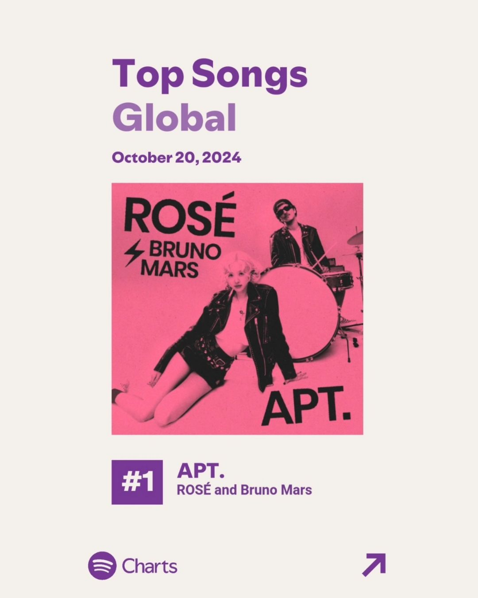
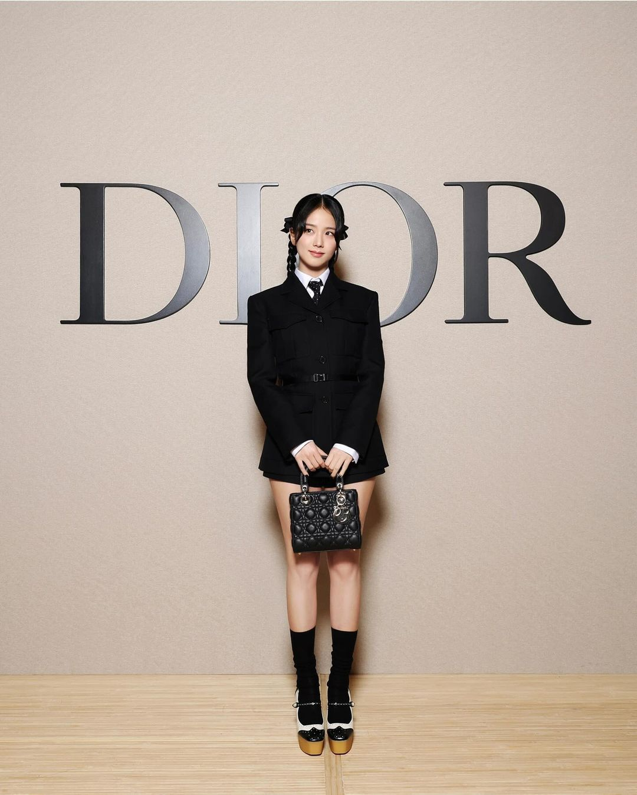
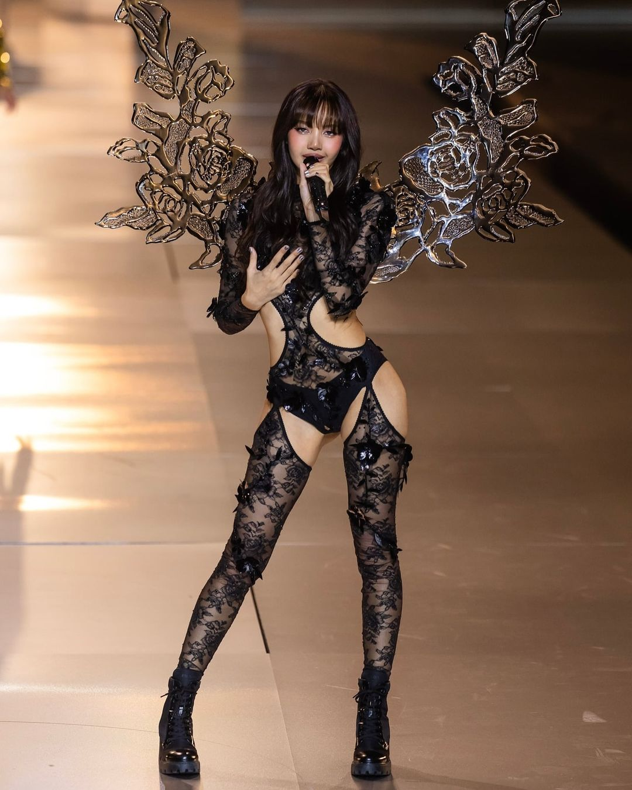

| Home | Membros | Discografia | Loja |
|---|
HOT NEWS
|  | HITOU! “APT” de Rosé feat. Bruno Mars alcançou o topo do Spotify Global, com 11,58 milhões de streams filtrados. |
|---|---|
ATENÇÃO! JISOO está se preparando para seu comeback solo após a conclusão das filmagens de “Newtopia” e de “Omniscient Reader's Viewpoint”. |
 |
|  | LISA foi o ato de abertura do Victoria's Secret Fashion Show 2024 com a música 'ROCKSTAR' e depois subiu ao palco novamente para cantar 'Moonlit Floor' com suas próprias asas de angel. |